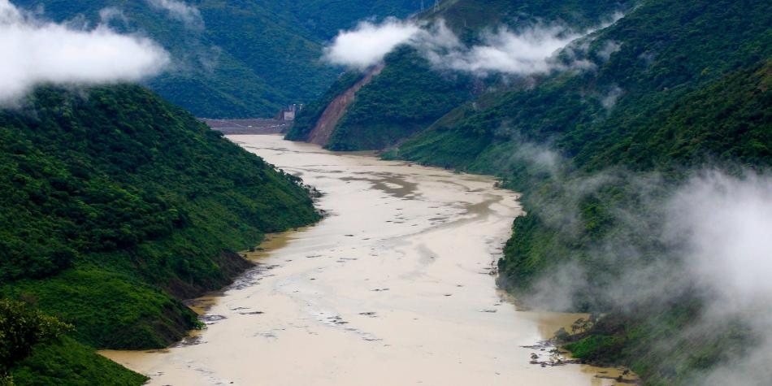
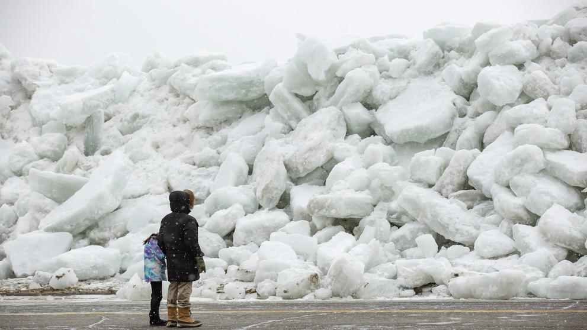
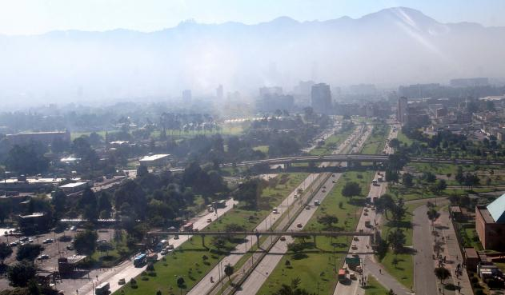
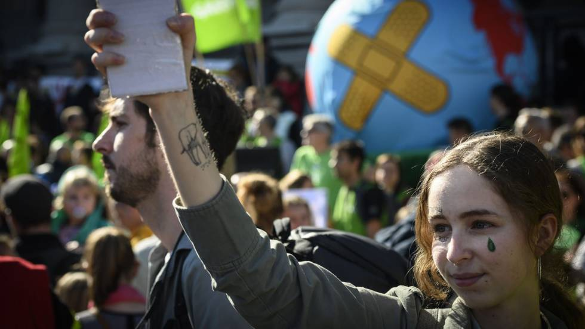
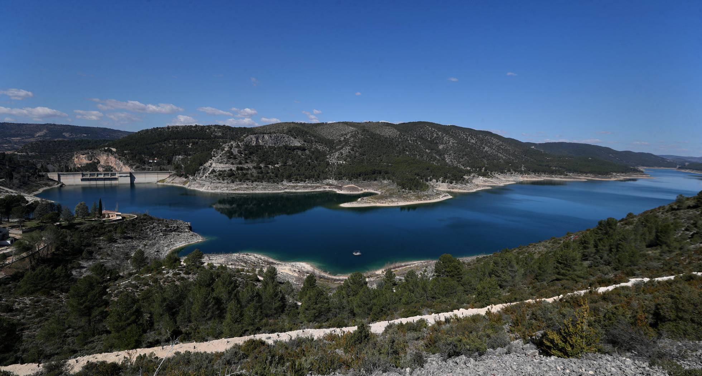

La Amazonía concentra el 75 % de la deforestación en Colombia
La Amazonía concentra el 75 % de la deforestación en Colombia, seguida de la región Andina con el 9 %, informó el Instituto de Hidrología, Meteorología y Estudios Ambientales (Ideam).
Según el boletín 17 de detecciones tempranas de deforestación, que recoge datos del cuatro trimestre del año pasado (octubre-diciembre): "la Amazonía concentra cinco de los seis núcleos de detección temprana de deforestación nacional", mientras que el otro está ubicado en la Sierra Nevada de Santa Marta, en el Caribe.
La información agregó que, por departamentos, los más afectados son Caquetá (45,9 %), Meta (13,1 %) y Guaviare (9,8 %), todos en el sur del país.
Deforestación
De los seis núcleos de deforestación detectados, el no amazónico que se identificó fue el PNN Sierra Nevada de Santa Marta.
Por municipios los que "concentran las mayores proporciones de detecciones tempranas de deforestación" son Cartagena del Chairá (Caquetá), con el 17,7 %; San Vicente del Caguán (Caquetá), con el 16,9 %; Solano (Caquetá), con el 10,7 %; Puerto Guzmán (Putumayo), con el 5,6 %, y San José del Guaviare (Guaviare), con el 4,4 %.
"Con el uso de imágenes (satelitales) de media y alta resolución se identificaron 3.875 detecciones tempranas de deforestación (con coordenadas conocidas) a nivel departamental, municipal y veredal", detalló el Ideam.
El 19 % de las detecciones se hallaron en zonas del Sistema Nacional de Áreas Protegidas (Sinap), siendo los más afectados los parque naturales Sierra Nevada de Santa Marta, Tingüa, Serranía de Chiribiqueta y La Macarena.
Una mujer, la nueva víctima de los incendios en la Sierra Nevada
Frenar el crecimiento de la deforestación a 2022, ¿meta suficiente?
La biodiversidad de La Macarena después de la guerra
Por otra parte, el informe detalla que hubo detecciones de deforestación en la región Pacífica, la mayoría de ellas en Alto Baudó, en el departamento de Chocó (este); en Timbiquí, Cauca, y El Charco, ubicado en Nariño, región fronteriza con Ecuador.
"El análisis de persistencia anual identificó áreas de 2.500 metros cuadrados en 34 municipios de nueve de los 32 departamentos, en donde para cada trimestre se identificó al menos una detección temprana de deforestación", agregó la información.
El informe contó con el apoyo financiero del programa Visión Amazonía, el proyecto Corazón de la Amazonía y la iniciativa Forests2020. En diciembre pasado, la Procuraduría pidió al Gobierno que adoptara "medidas urgentes" y creará una política pública para frenar la deforestación en el país ante las "graves problemáticas ambientales", especialmente en la Amazonía.

El uso mundial de recursos naturales se ha triplicado desde 1970
El uso de los recursos naturales se ha triplicado en el mundo desde 1970, una tendencia que sigue en alza y debe ser "crucial" en las políticas ambientales, según un Informe de Recursos Globales presentado este martes en Nairobi por la ONU.
"En un mundo en el que todos estamos conectados, nuestras responsabilidades aumentan y el enfoque en los recursos es crucial", explicó Janez Potocnik, portavoz del Panel Internacional de los Recursos, en el marco de la IV Asamblea de
Medio Ambiente de la ONU (UNEA-4), que se celebra hasta el 15 de marzo en Nairobi.
Este grupo científico de expertos, auspiciado por el Programa de la ONU para el
Medio Ambiente (PNUMA), también conocido como ONU Medio Ambiente, tiene como objetivo ayudar a las naciones a utilizar sus recursos naturales de una manera sostenible, sin comprometer el crecimiento económico y las necesidades humanas.
En la última mitad de siglo, la población mundial se ha duplicado -con previsión de llegar a los 9.300 millones de habitantes en 2050- y la extracción de materiales se ha triplicado, un proceso responsable del 90 por ciento de la pérdida de la biodiversidad y la generación de la mitad de los impactos climáticos, según el informe.
"Si no se tienen en cuenta los recursos, será muy difícil lograr los Objetivos de Desarrollo Sostenible (ODS, de la ONU). Podemos hacerlo mejor, pero tenemos que emprender acciones pronto y de manera contundente", señaló Bruno Oberle, autor del informe y académico en la Ecole Polytechnique Federale de Lausanne (EPFL) de Suiza.
Estas conclusiones se anunciaron a los medios como parte de UNEA-4, un evento que congrega a representantes de 193 países, incluidos jefes de Estado y ministros, para tratar temas como el plástico, los residuos, los químicos, la contaminación o el derecho medioambiental, entre otros muchos. En el texto también se enfatizó que el modelo actual del uso de recursos supone un "impacto negativo en el medioambiente y la salud humana"
Los jóvenes colombianos que luchan contra el cambio climático
La biodiversidad de La Macarena después de la guerra
Terrorismo, contaminación y tala amenazan riqueza natural de Colombia
La clave está en buscar soluciones inteligentes e invertir e innovación y nuevas tecnologías, de manera que el crecimiento sea más lento, pero superior.
Asimismo, en el informe se subraya cómo los beneficios económicos de la explotación de recursos se reparten de manera desigual entre países y regiones, elevando la desigualdad entre naciones ricas y otras en desarrollo. Para Oberle, la clave está en buscar "soluciones inteligentes" e invertir e innovación y nuevas tecnologías, de manera que el crecimiento sea "más lento, pero superior".
Este experto también propuso algunas alternativas para avanzar hacia este proceso, como aumentar los impuestos sobre los recursos naturales, de manera que estos se encarezcan, aplicar un impuesto sobre las emisiones de CO2, campañas que hagan referencia al comportamiento de los consumidores o que protejan el paisaje.
"Aquellos que toman las decisiones, tienen herramientas para actuar, como son la búsqueda de un uso eficiente de los recursos, la mitigación del calentamiento global, la protección de la diversidad y un cambio en la alimentación humana", se señala en el texto.
En la investigación se hace especial hincapié en la alimentación, ya que, según señalaron los expertos, una gran cantidad de comida termina cada año en la basura "mientras que personas mueren de hambre", y animó a los ciudadanos a "optar por dietas basadas en las verduras".

Tsunami de hielo: el extraño fenómeno que sorprende en el río Niágara, en Canadá
El lago Erie es una lámina de agua enorme de 25.000 kilómetros cuadrados situado justo en la frontera entre Estados Unidos y Canadá. Justo en la zona que baña el estado de Nueva York las temperaturas en invierno permanecen bajo cero muchas horas y en la superficie del lago se crea una capa gruesa de hielo. El domingo una tormenta con fuertes rachas de viento provocó “un fenómeno particularmente peligroso”, según informó el Servicio Nacional de Meteorología estadounidense. El hielo empezó a chocar contra las costas produciendo un espectacular tsunami de hielo.
El viento, que alcanzó hasta los 119 kilómetros, creó una marejada de gruesos bloques de hielo que empezaron a sobrepasar la orilla del lago y también del río Niágara. Ante la situación, la Policía del parque Estatal Niágara Falls alertó a través de Twitter de este tsunami helado y cerró varios tramos de carretera de la región.
Muchas personas han compartido fotos y videos del ‘tsunami de hielo’ en redes sociales. En sus publicaciones se observan montañas de hielo cerca de viviendas e inundando carreteras.
Un "tsunami de hielo" llegó a las orillas de algunos lagos y ríos de Canadá.
Este extraño fenómeno acontece cuando vientos muy fuertes empujan grandes bloques de hielo contra las barreras de las orillas.
En este caso, la "ola de hielo" ocurrió en Fort Erie, en la provincia canadiense de Ontario, a poco kilómetros de las cataratas del Niágara.
Allí en los últimos días se registraron temperaturas muy por debajo de los 0 grados centígrados.

Las causas que llevaron a Bogotá a la emergencia por contaminación
expertos en el tema para analizar qué fue lo que pasó, por qué se llegó al punto de tener que entregar tapabocas puerta a puerta a pacientes de alto riesgo respiratorio y cardiovascular, aumentar la restricción de la circulación de vehículos y hasta limitar el deporte al aire libre en las zonas más afectadas, como la ciclovía dominical, que tuvo que ser recortada en algo más de 30 kilómetros.
Aunque se trata de una medida temporal –que en todo caso puede subir a roja, si no mejoran las condiciones atmosféricas, o levantarse en caso de volver a la normalidad–, también es cierto que desde hace varias semanas docentes e investigadores de diferentes universidades prendieron las alarmas. También ambientalistas y ciudadanos del común se manifestaron por redes sociales y reclamaron las medidas de prevención.
El 80 % del ruido en Bogotá lo producen los automotores
Qué mascarilla usar para evitar que la alta polución lo enferme
Controlan incendio estructural en localidad de Barrios Unidos
Más de 130 vehículos han infringido el pico y placa ambiental
Fue así como en la mañana del jueves pasado –ocho días después de celebrarse el día sin carro en Bogotá–, la Administración distrital anunció la alerta amarilla en tres localidades: Bosa, Tunjuelito y Kennedy. Pero lo que nadie se esperaba era que 24 horas después, el indicador de contaminación por material particulado (PM) 2,5 se iba a disparar y pasara de 55 microgramos por metro cúbico (límite máximo de la alerta amarilla) a 60 y luego siguiera creciendo hasta llegar a 75, lo que obligó a la alerta naranja en la zona suroccidental de Bogotá
Néstor Rojas, profesor asociado de la Universidad Nacional, advierte de entrada que la ciudad llega a esta situación por un problema histórico en la falta de controles eficientes en las fuentes de contaminación. También dice que si bien la decisión de las alertas está bien sustentada, en el Distrito se demoraron en tomar las medias.
“Se nota que el control a los buses viejos y a los camiones es completamente ineficaz porque esas tecnologías siguen rodando durante muchos años, especialmente los camiones y las volquetas. Hasta con más de 50 años de trabajo se les ve rodando por avenidas y carreteras emitiendo gran contaminación. Esto es histórico”, advierte el docente.
Foto: Carlos Ortega.
Reparten tapabocas en Bogotá por emergencia ambiental
Se estregaron entregando tapabocas en las casas y sectores públicos a la población más vulnerable, niños y ancianos.
Foto: Carlos Ortega.
Otro eslabón roto en esta larga cadena es la que tiene que ver con los Centros de Diagnóstico Automotriz (CDA) que operan en Bogotá. “Se sabe que tienen fallas, que hay corrupción, que hay evasión a la revisión técnico-mecánica, que no hay sanciones o son débiles. Y cuando se hacen los operativos en la vías como herramienta de control, se generan comparendos y hasta, de pronto, hay una inmovilización, pero se saca a los pocos días y así no hay reducción de emisiones”, explica el experto.
A esto se unieron la llegada del fenómeno del Niño con una fuerte ola de verano, los incendios forestales provocados por manos criminales en los municipios de Fómeque, Quetame y en los cerros de Bogotá, la quema de campos de cultivo en los llanos colombovenezolanos, el poco viento que llega del oriente más vientos inesperados del occidente. Y esto sumado provocó que una capa gris se posara sobre la franja occidental.v
Se nota que el control a buses viejos y a los camiones es completamente ineficaz porque esas tecnologías siguen rodando durante muchos años, especialmente los camiones y las volquetas
La resolución 2254 de 2017, que es norma nacional que regula la calidad del aire, establece que si luego de 24 horas seguidas en dos puntos diferentes los niveles de PM 2,5 están entre 38 y 55, se debe declarar el nivel de prevención. Cuando pasa de 56 a 150 se debe decretar la alerta dependiendo del color que señale el índice de contaminación.
Y fueron estos indicadores los que a mediados de enero comenzó a detectar el profesor de los Andes y experto en salud pública Luis Jorge Hernández. Además, encontró que los días pasaban y los indicadores se mantenían. Fue entonces cuando comenzó a pedir la declaratoria de emergencia.
En realidad, no se trata de la primera vez que este investigador les sale adelante a las alertas. En oportunidades anteriores, después de analizar el monitoreo del aire en Bogotá, a través de los datos de la Agencia de Protección Ambiental de Estados Unidos (EPA), ha logrado detectar los altos niveles de polución.
Al consultarle sobre la situación que vive hoy la ciudad, el experto sostiene que puede empeorar.
“Estamos en nivel amarillo, podemos pasar a naranja en toda la ciudad, depende de si llueve y hay vientos. Esto es un llamado para acelerar el plan de descontaminación del aire de Bogotá, que está rezagado como unos 20 años. Hay que meterle toda porque esto puede volverse un problema grave de salud pública”, advierte el profesor Hernández.

No caben excusas ante el cambio climático
Algo pasa cuando los adolescentes, pensando tan pronto en su futuro, cambian el aula por la calle y nos apremian a adoptar medidas urgentes sobre las consecuencias del cambio climático: piensan en su porvenir y claman por nuestra responsabilidad. Greta Thunberg, joven sueca de 16 años, se ha convertido en el símbolo de una generación que teme por su futuro, exige soluciones y nos enfrenta a nuestras obligaciones con una reflexión de fondo: ¿qué mundo les vamos a dejar? Forma parte de una juventud que estará marcada por la escasez de agua, fenómenos climáticos extremos, crisis de biodiversidad y contaminación atmosférica, al límite de llegar a un punto sin retorno que nos indica que es preciso cooperar para compartir los recursos del planeta de manera equilibrada. No tenemos excusa y apenas tiempo de rectificar.
Las jornadas de Fridays for Future han coincidido con la cumbre de Nairobi de Naciones Unidas sobre el cambio climático cuya conclusión es desoladora: el estado del medio ambiente ha seguido deteriorándose en todo el mundo. La protesta de los jóvenes es una alarma y el informe final, inquietante. Caminamos hacia el incumplimiento de los acuerdos de París. Da la impresión de que estuviésemos aplazando el futuro. Los Objetivos del Desarrollo Sostenible (ODS) establecidos por la Naciones Unidas -en los que el agua juega un papel transversal-, suscritos por 195 países, son, de hecho, un pacto entre generaciones para proteger el planeta y cambiar un modelo productivo que devora los recursos naturales. Planteaban unos objetivos que empiezan a ser tardíos de alcanzar. Ahora parece que muy pronto fuese ya demasiado tarde.
Sin dejar a nadie atrás, el lema elegido por las Naciones Unidas para el Día Mundial del Agua que se celebra este viernes, es buena oportunidad para abogar, cada uno desde su posición, para que la ambición y el alcance presentes en la promulgación de los Objetivos del Desarrollo Sostenible sigan intactos.
La idea de un futuro climático incierto no es alentadora para nadie, menos aún para quienes apenas tienen despejado el horizonte del día siguiente. Hemos de encontrar espacios comunes de colaboración entre Administraciones, empresas y sociedad civil que propicien una solución colectiva de la que depende el mañana de la humanidad.
La globalidad nos ha aportado grandes ventajas, pero también ha generado incertidumbres: seremos 10.000 millones de habitantes en 2050 en un mundo básicamente urbano que consumirá, en apenas 10 años, el 50% más de energía y alimentos y el 30% más de agua de lo que se gasta actualmente. Desde el sector del agua ya estamos contribuyendo a dar respuesta, construyendo ciudades resilientes, infraestructuras naturalizadas o desarrollando herramientas para que nadie se quede fuera del acceso al agua y al saneamiento.

El calentamiento global obliga a cambiar la gestión del agua en España
Ni cuencas excedentes –a las que les sobra el aguasupuestamente– ni deficitarias –a las que les falta y reciben de otras–. Las previsiones científicas apuntan a que el cambio climático dejará obsoleta una terminología que ha sustentado en las últimas décadas trasvases entre cuencas y obligará también a cambiar la política de gestión del agua seguida en las últimas décadas en España, donde el regadío ha crecido descontrolado sin tener en cuenta los recursos hídricos disponibles.
"Las previsiones del Cedex [Centro de Estudios y Experimentación de Obras Públicas] y del IPCC [el grupo de expertos que radiografían el calentamiento global para la ONU] exponen que se van a reducir los recursos hídricos disponibles en España entre un 24% y un 40% dependiendo de la cuenca", apunta Hugo Morán, secretario de Estado de Medio Ambiente del Ministerio para la Transición Ecológica. Esas proyecciones son hasta 2100. "Pero ya estamos constatando que se están anticipando escenarios que preveía el IPCC", añade Morán.
El Gobierno está preparando ya la revisión de los planes hidrológicos de todas las cuencas del país. Espera tener diseñadas las líneas generales de esa revisión en junio, que debe estar lista para entrar en vigor en 2021. La última palabra la tendrá, en todo caso, el Gobierno que salga de las urnas el 28 de abril.
Pacto nacional
El calentamiento global hará que sea complicado encontrar una región a la que el agua le sobre, si bien, como dice el secretario de Estado aludiendo a diferentes estudios científicos, Castilla-La Mancha y Levante "serán las zonas con más impactos, con reducciones de 40%". Ambas zonas son protagonistas desde hace cuatro décadas de un enfrentamiento por el agua, que se recrudece ahora durante la campaña electoral de las autonómicas. Un acueducto conduce el agua desde la cabecera del río Tajo, en Castilla-La Mancha, hasta el Segura, que sirve para abastecer a poblaciones y, fundamentalmente, regadíos de Murcia, Alicante y Almería. Pero, hace solo dos años, hubo un primer aviso serio: la sequía fue tan extrema que ese trasvase entre el Tajo y el Segura estuvo parado durante 11 meses; los pantanos de los que debía salir el agua estaban en mínimos históricos y la normativa vigente no permitía que se abriera el grifo.
Las calles se llenaron de protestas de regantes y el Gobierno del PP puso sobre la mesa un pacto nacional. A un lado de la mesa, en representación del Ejecutivo, estaba la entonces ministra Isabel García Tejerina; al otro, en representación del PSOE, Hugo Morán. "Había un espacio de diálogo, pero llegó la moción de censura", explica Morán. "Ya no volvimos a hablar", dice García Tejerina sobre aquel intento fallido. La exministra reconoce la importancia de intentar cerrar un gran acuerdo de este tipo debido a que la "planificación que se realiza es a largo plazo" y los cambios de Gobiernos "no pueden paralizar las inversiones". "Hace falta consenso", añade.